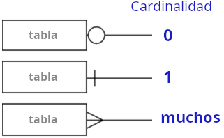
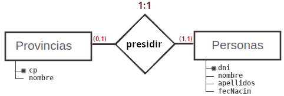
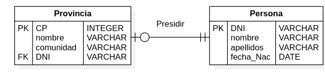
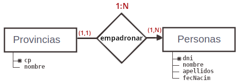
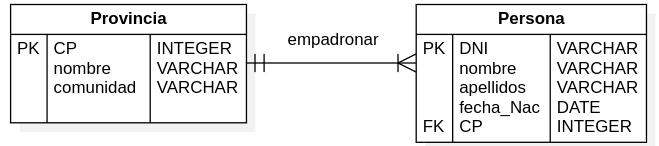
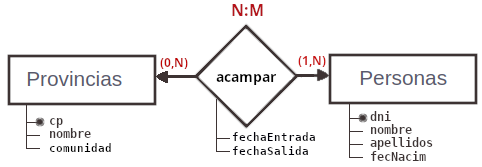
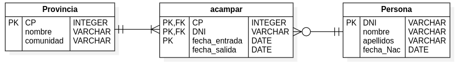

Diagrama ER para el modelo físico
El modelo físico de datos corresponde a las tablas de la BD a las que ha dado lugar el diagrama ER. Este modelo también tiene una representación mediante un diagrama ER, donde:
- Cada tabla se representa con un rectángulo, independientemente de que provenga de una entidad o de una relación.
- Se utilizan unos conectores entre tablas con unos símbolos en sus extremos para representar las cardinalidades de cada relación: 
Ejemplos
EJEMPLO 1:1
- En toda provincia hay un Presidente de Diputación: 
Esto traducida a un diagrama ER físico sería: 
EJEMPLO 1:N
- En una provincia hay mucha gente empadronada: 
El diagrama ER con tablas sería: 
EJEMPLO N:M
- Una persona puede haber hecho turismo de camping en muchas provincias. Suponemos que en todas las provincias hay algún camping: 
Que da lugar a tres tablas: 